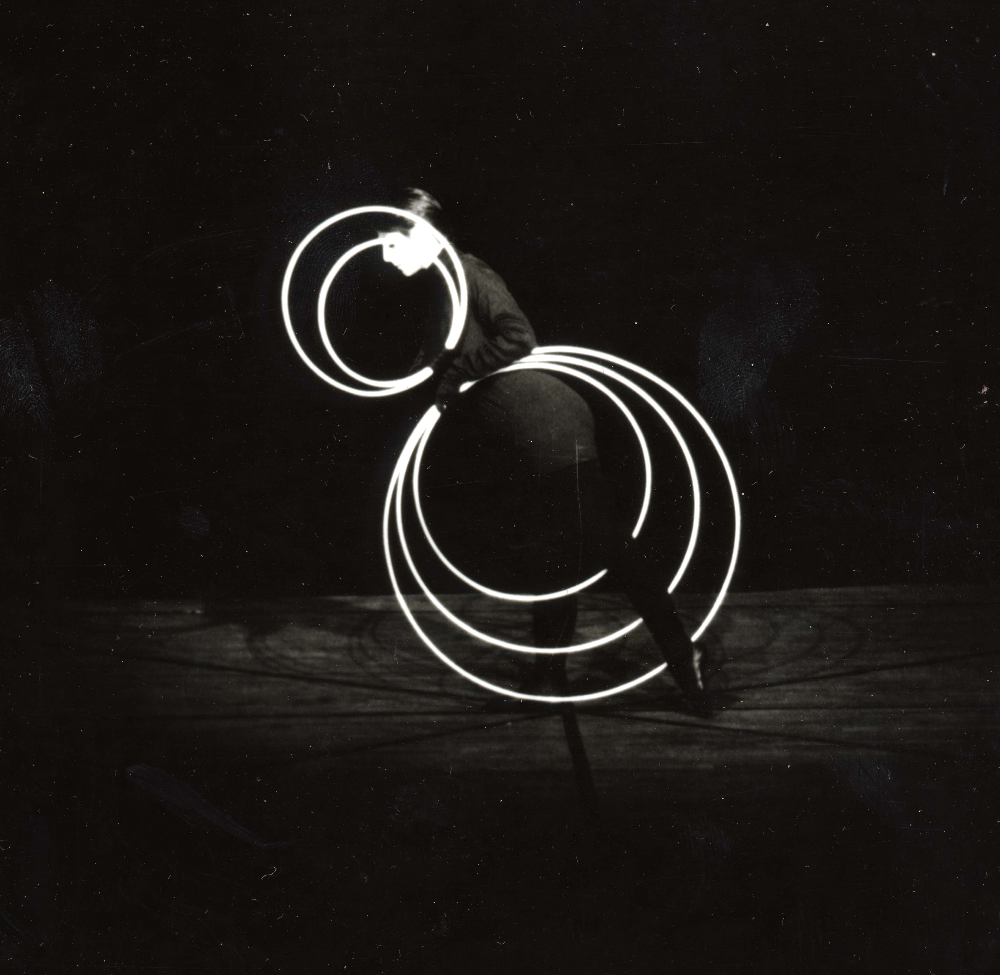

Redesign and site development
Filmmaker Debra McCall wanted a website redesign to promote her 1982 film that recreates Oskar Schlemmer's Bauhaus Dances. The design needed to capture the essence of the Bauhaus aesthetic and translate it into modern web development. However, some proposed solutions didn't match this aspirational aesthetic, and had an "out-of-the-box" feel we wanted to avoid.
Although the site's content is mostly static, a CMS was needed to allow for future updates without requiring developer assistance. WordPress was chosen because of its large install base, and the abilty to heavily customize the front end. The most efficient solution was to develop a custom WordPress Theme. Using Underscores as a base theme saved considerable development time while providing a solid foundation.
The inspiration for the new identity came from the Hoop Dance segment of the film, where a dancer holds white hoops against a dark background.  These rings are mapped to the user's movements, and are subtly animated to follow the cursor.